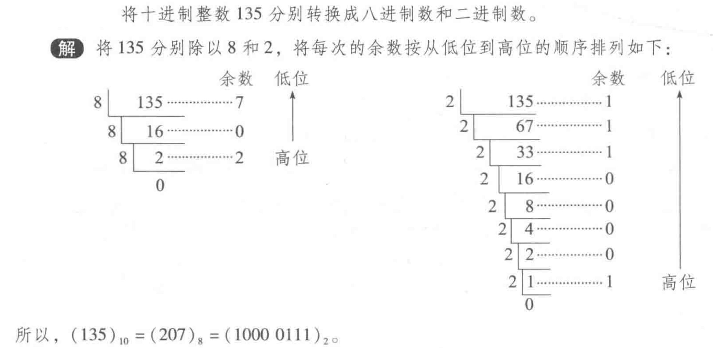
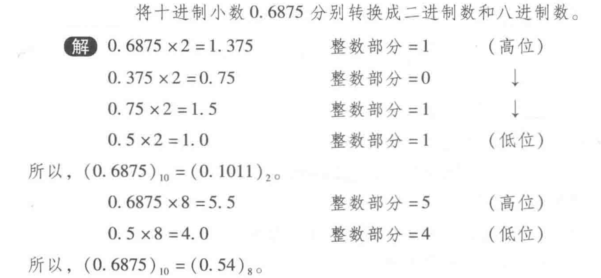

数制
graph LR
A[数制]
A --> C(基数)
A --> D(位权)
每一位的权由基数的幂次决定，不同位上的数有着不同的权值，这称为位权表示法。特点为：
- 基数为 \(R\) 的数制中，包含 \(0,1,...,R-1\) 共 \(R\) 个数码（基数也代表着数码的个数）
- 每个数字都要乘以基数的幂次，该幂次由每个数字所在的位置决定
- 小数点向右移动一位，数就扩大 \(R\) 倍；小数点向左移动一位，数就缩小 \(R\) 倍
- 每个数码只能有一个字符（多个字符就含有进位关系）
常用进制有：十进制（decimal system）、二进制（binary）、八进制（octal）、十六进制（hexadecimal）。通常用数字后面跟一个英文字母来表示该数的数制：d, D, b, B, o, O, h, H。
注意：位权表示法并不能精确地表示所有小数。
如：十进制下无法表示出无限小数、许多十进制小数无法用二进制精确表示（如 \(0.1\)）、...。在某种进制下无法用位权表示法准确表示的数字在另一种进制下可能可以准确表示，例如：\(\dfrac{1}{3}\) 在十进制下无法完整表示，但在三进制下可直接表示为 \(0.1\)。
所有二进制小数都可以用十进制表示，但并非所有十进制小数都可以用二进制表示。事实上由于 \(n\) 位可以表示 \(2^n\) 个二进制数，可以表示 \(10^n\) 个十进制数，因此可以用二进制表示的十进制小数只占 \(0.2^n\) 。
C语言中的数制
在 C 语言中在声明整型常量时除了用十进制表示外，还可以用八进制或十六进制表示：
- 前缀
0表明采用的是八进制 - 前缀
0x或0X表明采用的是十六进制
在格式字符串中，%d、%o、%x 分别用于将整数输入/输出为十进制、八进制、十六进制。
进制转换¶
计算机内部所有的信息采用二进制编码表示，但在计算机外部，为了书写和阅读的方便，大都采用八、十或十六进制表示形式，因此计算机在数据输入后或输出前都必须实现这些进制的数和二进制数之间的转换。
k 进制 → 十进制¶
对于任意一个 \(k\) 进制数 \(A\)，它对应的十进制值为：
十进制 → k 进制¶
整数部分和小数部分采用不同的方法：
-
整数部分：除基数+逆向取余
例子

-
小数部分：乘基数+正向取整
例子

由于十进制小数并不是都能够用有限位的二进制数精确地表示，这时应根据精度要求转换到一定的位数为止，此时得到的是近似值。
- 要求精度为 \(10^{-k}\) 时，设二进制小数位数为 \(m\)，由 \(2^{-m}\le 10^{-k}\Longrightarrow m\ge\frac{k}{\lg2}\approx3.32k\)，据此可以很方便地求出转换后二进制小数的位数。
- 要求二进制数取 \(m\) 位小数时，可求出 \(m+1\) 位，然后对最低位做 0舍1入 处理。
如果一个十进制数既有整数部分又有小数部分，则应将整数部分和小数部分分别进行转化，再把两者结果相加。
小技巧
-
一个数除 \(2^n\)，就是将该数的二进制表示中的小数点左移 \(n\) 位。 例如 \(13\)（8+4+1）的二进制形式为：1101，因此\(\frac{13}{16}\)的二进制表示为：0.1101。
-
一个数乘 \(2^n\)，就是将该数的二进制表示中的小数点右移 \(n\) 位。
降幂法¶
例如，对于十进制数 \(117\)，
- 提取出 \(64=2^6\)；剩下 \(117-64=53\)；
- 提取出 \(32=2^5\)；剩下 \(53-32=21\)；
- 提取出 \(16=2^4\)；剩下 \(21-16=5\)；
- 提取出 \(4=2^2\)；剩下 \(5-4=1\)；
- 提取出 \(1=2^0\)。
因此：\(117=2^6+2^5+2^4+2^2+2^0\)，所以其二进制为：\(1110101\) 。

二、八、十六进制¶
3 位二进制数是 1 位八进制数，因此将二进制数转换为八进制数的方法为：
- 以小数点为界
- 将小数点左侧（整数部分）从右往左分别按每 3 位为 1 组，不足 3 位用 0 补足，转为八进制
- 将小数点右侧（小数部分）从左往右分别按每 3 位为 1 组，不足 3 位用 0 补足，转为八进制
八进制转换为二进制，只需将每一位转换为对应的二进制数即可。

4 位二进制数是 1 位十六进制数，则转换方法类似于二进制、八进制之间的转换。
用 2 个十六进制数即可表示出 1 个字节。
八进制与十六进制间的转换，可以先转换为二进制，再进行转换。